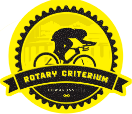

Now entering its fourth year, the Stifel Nicolaus Edwardsville Rotary Criterium, a series of high-speed bicyle races on the closed of streets of Downtown Edwardsville, Illinois on Saturday, August 17, 2013, is one of the region's most exciting one-day events.
The Rotary Club of Edwardsville began hosting this unique signature event in 2010 as a fund-raising effort for community-enhancing projects and as a gift to the people of Edwardsville. Because Edwardsville is a bicycling city that loves big events and opportunities to show off our Downtown, a bike race was a perfect fit.